전광판 시험
앱에서 위 경로를 찾고 '승강장에서 열차 비춰 보기'를 누른 뒤, 그림을 눌러 화면 가득 띄우고 아이폰으로 비추세요. 색 딱지가 앱이 내야 할 답이에요.
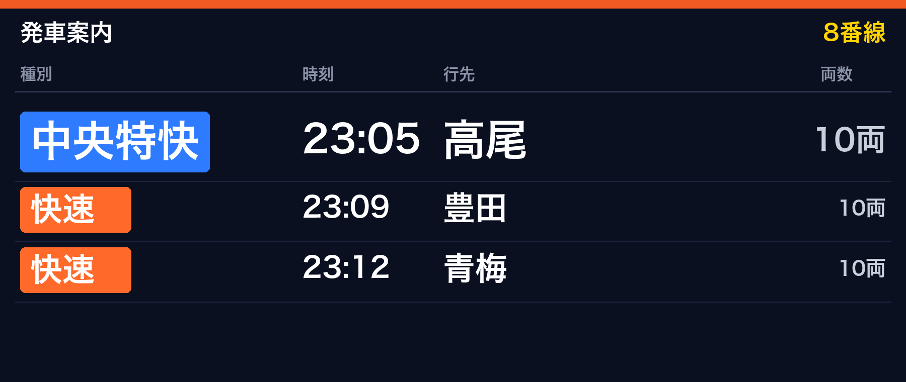
신주쿠 → 하치오지
타세요
문제 2 · 中央特快는 하치오지에 서요. 빠른 열차를 타도 되는 경우
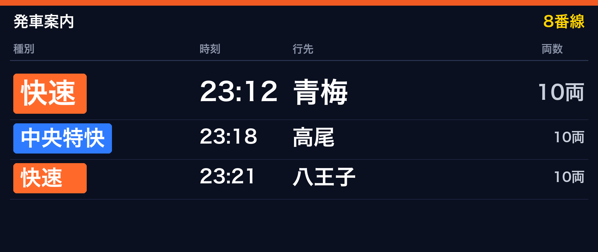
신주쿠 → 하치오지
반대 방향
문제 3 · 青梅行은 다치카와에서 갈라져 하치오지에 가지 않아요
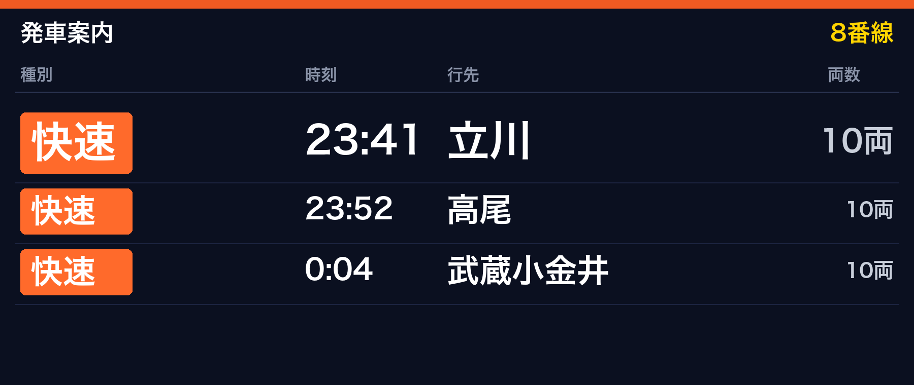
신주쿠 → 하치오지
여기까지 안 가요
문제 1 · 立川에서 끝나는 열차라 하치오지까지 가지 않아요
 신주쿠 → 니시오기쿠보
타지 마세요
문제 2 · 中央特快는 니시오기쿠보를 지나쳐요
신주쿠 → 니시오기쿠보
타지 마세요
문제 2 · 中央特快는 니시오기쿠보를 지나쳐요
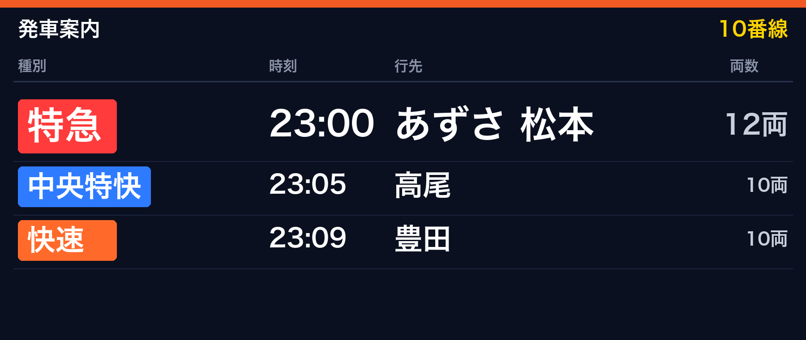
신주쿠 → 하치오지
타지 마세요
문제 2 · 특급 あずさ는 특급권이 있어야 해요. 일반 표로는 못 타요
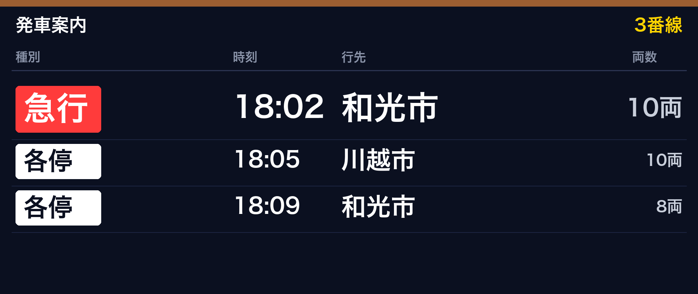
시부야 → 기타산도
타지 마세요
문제 2 · 急行는 기타산도를 지나쳐요. 各停를 타야 해요
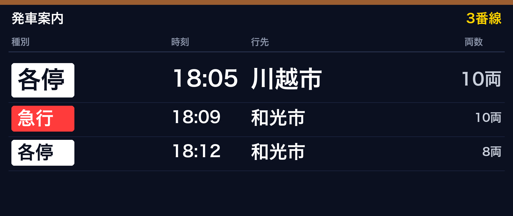
시부야 → 기타산도
타세요
문제 1 · 다른 회사 노선(도부선) 끝까지 가는 各停. 낯선 행선지여도 타요
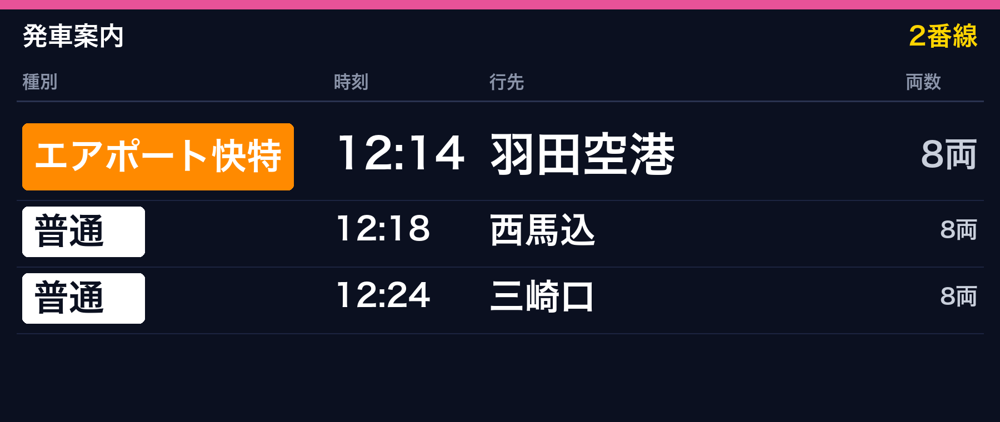
신바시 → 니시마고메
반대 방향
문제 3 · 羽田空港行은 센가쿠지에서 게이큐선으로 갈라져 니시마고메에 가지 않아요
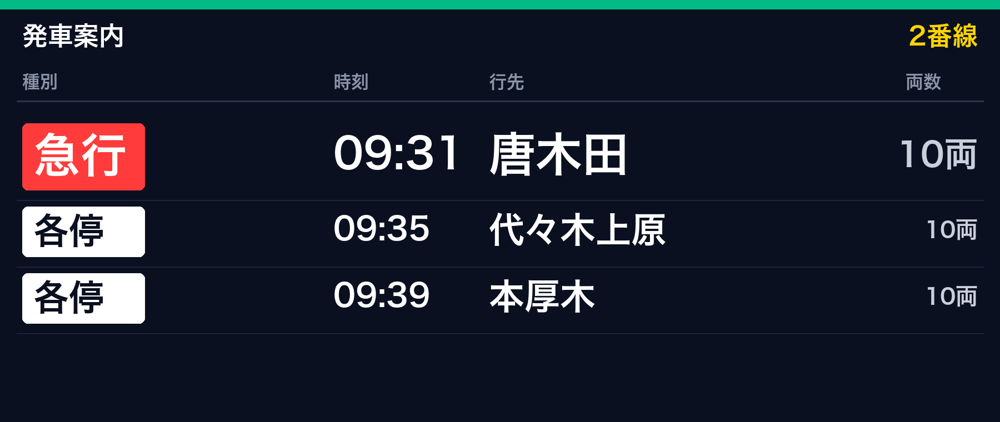
오모테산도 → 요요기우에하라
타세요
문제 1 · 오다큐선까지 가는 열차. 지요다선 안에서는 모든 역에 서요
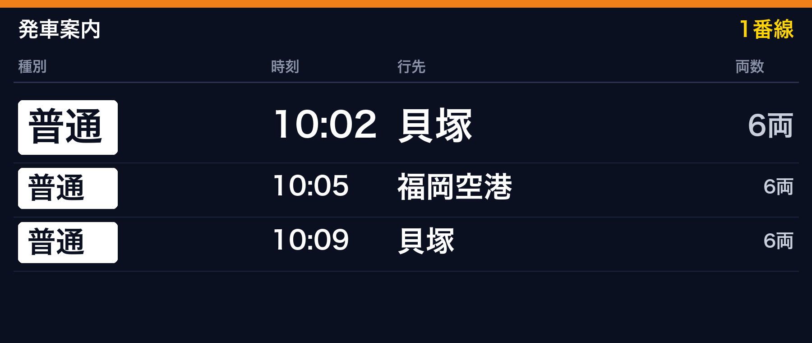
후쿠오카 덴진 → 하카타
반대 방향
문제 3 · 貝塚行은 나카스카와바타에서 하코자키선으로 갈라져요
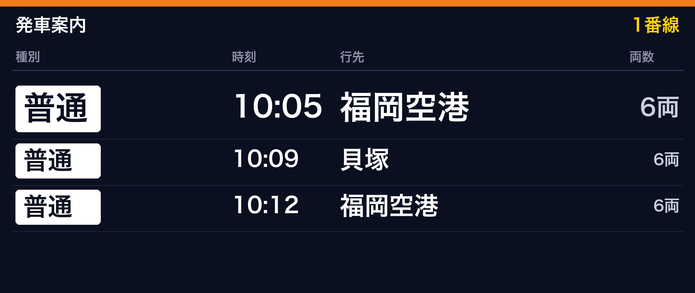
후쿠오카 덴진 → 하카타
타세요
문제 1 · 福岡空港行은 하카타에 서요
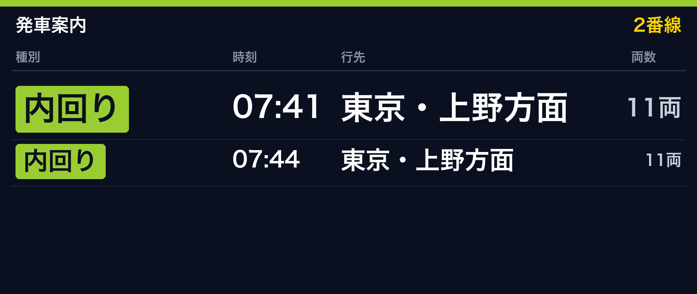
시나가와 → 다마치
타세요
문제 1 · 순환선은 内回り · 外回り 글자로 방향을 정해요
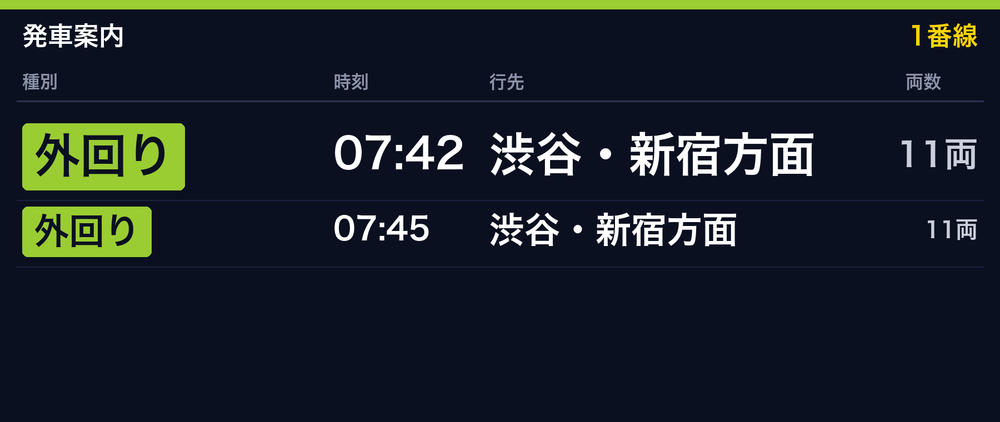
시나가와 → 다마치
반대 방향
문제 1 · 外回り는 반대쪽으로 도는 열차예요
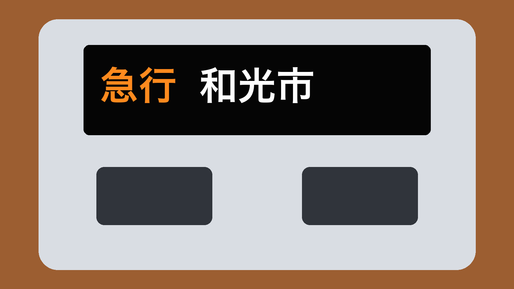
시부야 → 기타산도
타지 마세요
문제 2 · 열차 앞 표시. 急行는 기타산도를 지나쳐요
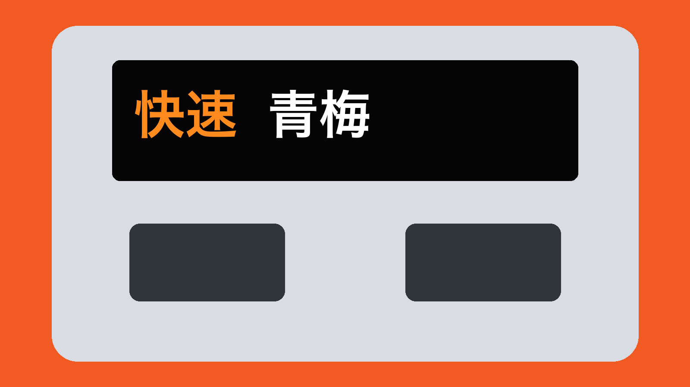
신주쿠 → 하치오지
반대 방향
문제 3 · 열차 앞 표시. 青梅行은 다치카와에서 갈라져요